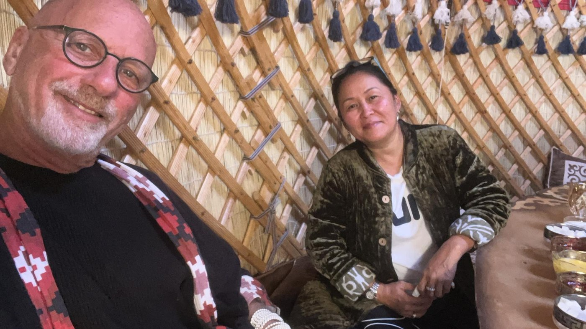

Genuine photography of the boz üy, the workshop in Kyzyl-Tuu, and the hands that raise it. The plates below mark what we are documenting now. We do not borrow a stock image to fill a space.
Every image here is real, or it is a marked place for a real one. No stock, ever. Authenticity is the whole point.

Plate · Inside the boz üy, Kyrgyzstan · genuine Tündük photograph
Exteriors
A cluster at a resort, raised and finished
Winter, snow on the dome, wood smoke at twilight
Interiors
The full span of a 7m interior, configured for guests
The Craft & Process
Communal felt rolling, the women's half of the craft
Carved bosogo door frame, painted motifs
Shyrdak cutting, two layers, mirrored pattern
The video QC walkthrough, before a shipment leaves
The People